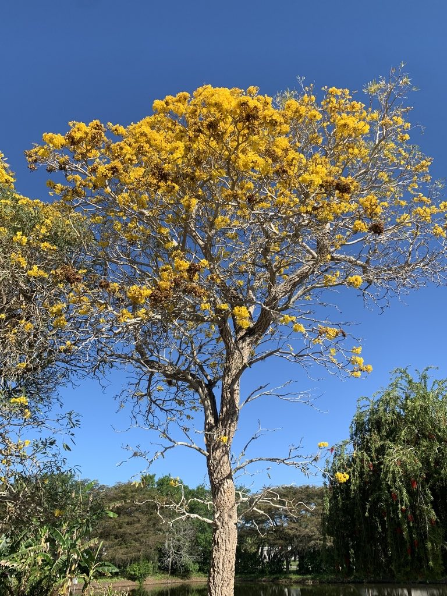

- The blooms appear on bare branches — the tree drops its leaves just before flowering, so nothing competes with the color. A tree in full bloom in late winter or early spring looks like it caught fire overnight.
- Despite the common name 'Caribbean Trumpet Tree,' this species is not native to the Caribbean at all. It comes from the dry savannahs and gallery forests of South America — Brazil, Bolivia, Paraguay, and Argentina.
- In Brazil's Caatinga scrubland, this tree is one of the last nesting sites for the Spix's Macaw, now extinct in the wild. Reintroduction efforts launched in 2022 depend partly on enough healthy trees surviving to provide nest cavities.
- Its seeds are paper-thin and winged — each capsule releases dozens of them into the air, and a single tree can blanket a nearby lawn with seedlings after a wet spell.
Native to the seasonally dry tropics of South America — Suriname, Brazil, eastern Bolivia, Paraguay, Peru, and northern Argentina — where it grows in open savannahs, dry woodlands, and along gallery forest edges. It is not native to the Caribbean, despite the widely used common name.
Introduced to Florida and the wider Caribbean as an ornamental street and landscape tree, particularly popular in South Florida from the 1970s onward. It has since escaped cultivation and can be found naturalized in disturbed sites in Palm Beach and Broward Counties.
- The Yellow Trumpet Tree belongs to the Bignoniaceae family — the same family as Jacaranda and the native Trumpet Creeper — and shares their characteristic tubular flower architecture built to reward specific pollinators.
- The genus name Tabebuia derives from a Taino word used in the Caribbean, a linguistic holdover from the era when many South American species arrived in Florida via Caribbean trade and horticulture.
- The leafless flowering display is not accidental — it is a seasonal drought response. In its native habitat the dry season triggers leaf drop, and the explosion of blooms that follows is timed precisely to attract pollinators before competing plants have fully leafed out.
- The tree can occasionally scatter a few blooms during summer in South Florida, a trait that helps distinguish it from its close relatives.
- One practical caution for landscape use: UF/IFAS researchers have flagged this species as susceptible to wind damage. Its wood is relatively brittle compared to other ornamental trees, and branches may break in tropical storms — worth considering when choosing a planting site in hurricane country.
The flowers are a reliable late-winter and spring nectar source at a time when relatively few trees are blooming in South Florida — making them a meaningful resource for bees, which are the primary pollinators. Studies in the tree's native cerrado habitat documented 14 bee species visiting the flowers, with large-bodied bees proving the most effective at transferring pollen.
Hummingbirds and butterflies also visit the blooms.
In its native South American range, hollow trunks of mature specimens provide critical nest cavities for cavity-nesting birds. The tree's connection to the Spix's Macaw — a bird extinct in the wild and the subject of active reintroduction efforts in Brazil — underscores how central it can be to its local ecosystem, even if that relationship plays out far from Florida.
Bright yellow, tubular to funnel-shaped flowers up to 6.5 cm across, borne in loose terminal panicles on bare branches at the end of the dry season — typically late winter to early spring in Florida.
Slender capsules about 10 cm long that split open to release numerous thin, papery winged seeds designed for wind dispersal. Seeds are prolific and germinate readily in moist conditions.
Palmately compound, with 5 to 7 oblong leaflets each 6 to 18 cm long. Both surfaces are covered in fine silvery scales that give the foliage a distinctive pale, shimmering cast — the source of the alternate name Silver Trumpet Tree.
Briefly deciduous in the dry or cool season before flowering. In South Florida the tree may retain some leaves in mild winters but typically drops them just ahead of the main bloom flush.
In winter or early spring, watch for the leafless flowering display — clusters of yellow trumpets on bare branches are the signature look. The silvery-scaled leaves are equally distinctive once the tree leafs back out. Slender seed capsules hang on after the flowers drop; look for the split pods releasing winged seeds on a breezy day.
Tabebuia aurea is not considered toxic to people, dogs, or other pets — major poison control and veterinary sources do not list it as a hazard. The prolific winged seeds are harmless. It is not a food plant, but casual contact or incidental ingestion of small amounts poses no known risk.
The name history of this species is genuinely tangled. It has been sold and planted under the synonyms Tabebuia caraiba and Tabebuia argentea for decades, and those names still appear on older nursery tags and landscape references. The current accepted name is Tabebuia aurea.
A 2007 molecular study split the old genus Tabebuia into three genera, moving many of the Florida-familiar species (the golden trumpet tree, the pink trumpet trees) into the new genus Handroanthus. Tabebuia aurea was retained in Tabebuia — so while relatives changed names, this one stayed put.


- © ciferno (CC-BY-NC), via iNaturalist
- © Randall Carter (CC-BY-NC), via iNaturalist
- © Rob Carr (CC-BY-NC), via iNaturalist